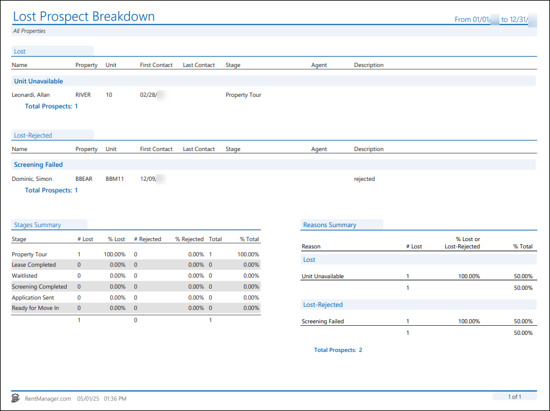
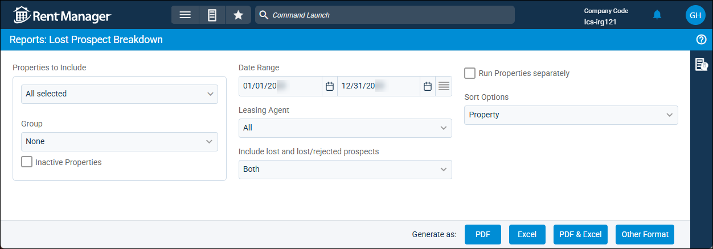
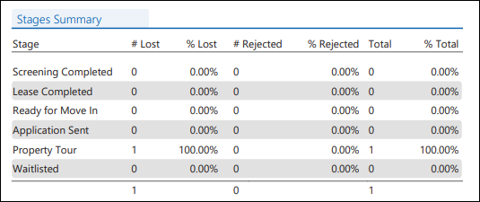
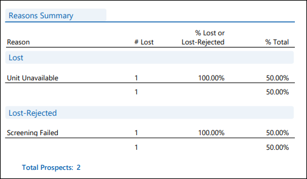

Source: https://rmxhelp.rentmanager.com/Topics/Express/Other/Reports/Lost-Prospect-Breakdown.htm
Lost Prospect Breakdown (Report)
The Lost Prospect Breakdown report displays prospects who were set as Lost or Lost - Rejected on the prospect's details page during the date range. The prospect's last stage, dates of first and last contact, and a description of the lost reason display to assist you in analyzing at what stage the prospect was lost across the properties in your portfolio. Additionally, the reasons why prospects chose not to rent from you (cost of rent, pet restrictions, etc.) and/or the reasons you chose not to lease to prospects display.
Related Privileges
| Group | Privilege | Column |
|---|---|---|
| Letter/Email Templates/Reports/Packets | Run reports | Enabled |
Additionally, on the Reports tab, you must have access to Lost Prospect Breakdown.
For more information, refer to Control User Access.
To view the Lost Prospect Breakdown report, do the following:
-
Go to
 arrow_forward Rental Info arrow_forward Prospects arrow_forward Lost Prospect Breakdown.
arrow_forward Rental Info arrow_forward Prospects arrow_forward Lost Prospect Breakdown.
The Reports: Lost Prospect Breakdown page displays. -
Adjust the report options as desired. Each option is described below.
-
Generate the report in your desired file format(s).
Related Preferences
Reports may look different depending on whether or not the Use modernized report style system preference is enabled. For more information, refer to General Report Options (System Preferences).

Report Options
The report options described below determine what data displays in the report.

Properties to Include
Select each property or a property Group to be included in the report.
More Information
This field populates only with the properties to which you have access. Your access to properties can be managed from your user account or on the property's details page. For more information, refer to Limit Access to a Property.
Optionally, check Show Inactive Properties to include properties that are no longer active.
Date Range
Enter or select the date range to determine the data that displays in the report.
In the Date Range section, set the From and To dates for which the report should examine data.
These fields automatically populate with today’s date. Enter a different date or select a date from the calendar. Alternatively, adjust the dates using the available preset buttons or click  to open more options for setting a date range.
to open more options for setting a date range.
Include Lost and Lost-Rejected Prospects
Select which prospects to include in this report, based on the status defined on the Prospect details page.
| Option | Description |
|---|---|
|
Both |
All prospect accounts converted to a status of either Lost or Lost - Rejected display. |
|
Lost |
Prospect accounts that are marked Lost because they no longer plan to lease from you display. |
|
Lost - Rejected |
Prospect accounts that are marked Lost-Rejected because you no longer plan to lease to them display. |
Run Properties Separately
Check to generate a separate report for each selected property. Otherwise, all selected properties are combined into a single report.
Sort Options
Select one of the following options to determine how the report results are sorted:
| Option | Description |
|---|---|
|
Account Number |
Prospects are sorted numerically by their system-generated ID number in ascending order (lowest to highest). |
|
Last Name |
Prospects are sorted alphabetically by their Last Name. |
|
Property |
Prospects are sorted alphanumerically by Property name. |
|
Unit |
Prospects are sorted alphanumerically by Reserved Unit name. Prospects with no reserved unit display last in the results. |
Leasing Agent
Select an active user to display only prospects assigned to those leasing agent(s) in the report results. Optionally, select All to view all prospects, regardless of their leasing agent assignment. Only users with Leasing Agent selected on their User details page display in the list.
Report Results
The report results are described below including, if applicable, section, column, and subreport or tab descriptions.
Report Header
The report header displays the report name and key information selected in the report options, such as date information and which properties were examined in the report.
Column Descriptions
The columns that display in the report are described below.
| Column | Description |
|---|---|
|
Agent |
The Leasing Agent assigned to the prospect, as entered on the prospect's details page. |
|
Description |
The text entered in the Description field when entering a lost reason. |
|
First Contact |
The date of the first contact with the prospect recorded in Rent Manager. First contact is established by the earliest email, visit, or call on the prospect's History/Notes pop-up where the checkbox for Spoke With Prospect is checked. |
|
Last Contact |
The date of the most recent contact with the prospect recorded in Rent Manager. Last contact is established by the latest email, visit, or call on the prospect's History/Notes pop-up where the checkbox for Spoke With Prospect is checked. |
|
Name |
The name of the prospect as entered on the prospect details page, in the General Information tile. |
|
Property |
The Property selected on the prospect details page, in the General Information tile. |
|
Stage |
The name of the last stage assigned to the prospect. |
|
Unit |
The Unit Name entered of the Reserved Unit selected on the prospect details page's Reservation/Expected Lease Information tile. |
Stages Summary Subreport
A subreport detailing each prospect stage assigned to a prospect at the time they were converted to a status of Lost and/or Lost - Rejected displays at the bottom of the report.
The appearance of the subreport is dependent upon your selection in the Prospects to Include section of the report options. If Both was selected, the report displays as in the image below. If only Lost or Lost - Rejected was selected, the subreport does not display the Lost or Rejected columns, respectively, and the Total and % Total columns also do not display.

The following columns display in the subreport:
| Column | Description |
|---|---|
|
# Lost |
The number of prospects lost in this stage during the date range. |
|
# Rejected |
The number of prospects lost - rejected in this stage during the date range. |
|
% Lost |
The percent of the total prospects that were lost in this stage during date range. |
|
% Rejected |
The percent of total prospects lost - rejected for this reason during the date range. |
|
% Total |
The percent of the total prospects who were lost and/or lost - rejected in this stage during the date range. |
|
Stage |
The stage of the prospect at the time of the conversion to Lost or Lost - Rejected. Stages are ordered in this report based upon their position in the Prospect Stages page. |
|
Total |
The total number of prospects who were lost and/or lost - rejected in this stage during the date range. |
Reasons Summary Subreport
A subreport displaying each lost reason that was cited in the date range, the number of prospects lost and/or lost - rejected with that reason, a count, a percent of total prospects, and a summary total is included in the report.
If the Prospects to Include option of Both was selected in the report options, the summary is separated by Lost - Rejected and Lost prospects, with a total Count at the bottom and a % Total column.

The following columns display in the subreport:
| Column | Description |
|---|---|
|
% Lost/Rejected |
The percent of the total Lost - Rejected and/or Lost prospects who were lost for this reason. |
|
% Total |
The percent of all prospects that were Lost and/or Lost - Rejected for this reason during the date range. |
|
# Lost |
The number of prospects lost due to this reason in the Date Range. A total of all prospects who were Lost and/or Lost - Rejected during the date range displays at the bottom of the column. |
|
Reason |
The name of the lost reason. |